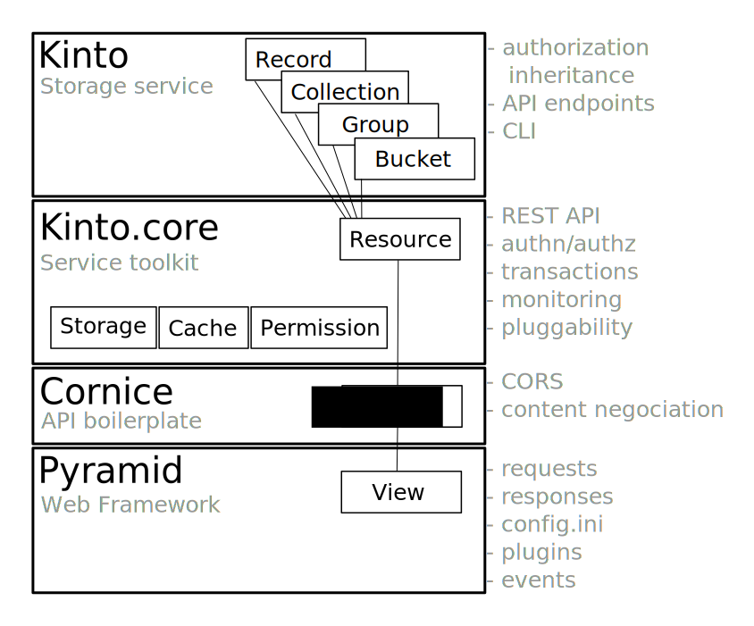
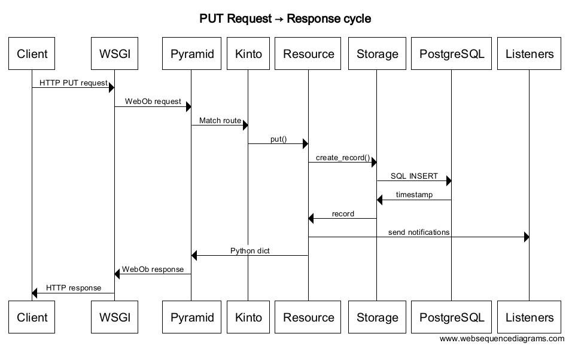

Concepts¶
Basically, Kinto is a service where client applications can store and retrieve JSON data.
In order to provide synchronisation and sharing features for these data, Kinto introduces some basic concepts.
Kinto objects in brief:
| Object | Description |
|---|---|
| bucket | Buckets can be seen as namespaces: collection names won’t collide if stored in different buckets. |
| collection | A collection of records |
| record | The actual stored data |
| group | A named list of principals to define permissions. |
Buckets, Collections, and Records¶
A record is the smallest unit of data. By default, there is no schema, and the JSON can contain anything.
A collection is a group of records. Records are manipulated as a list and can be filtered or sorted. Clients can obtain the list of changes that occured on the collection records since a certain revision (e.g. last synchronisation).
A bucket is an abstract notion used to organize collections and their permissions.
Every kind of object manipulated by Kinto shares some common properties:
- A unique identifier.
- A revision number, automatically incremented on change.
- A set of permissions.
Those concepts are very similar to a hard disk, where buckets would be partitions, collections are folders, and records are files!
Groups¶
Kinto has a concept of groups of users. A group has a list of members and belongs to a bucket.
Permissions can refer to the group URI instead of an individual user - this makes it easy to define “roles”, especially if the same set of permissions is applied to several objects.
Permissions¶
In order to control who is allowed to read, create, modify, or delete the records, permissions can be defined on buckets, groups, collections, and single records.
Inherited¶
Since there is a notion of hierarchy between buckets, collections, and records, Kinto considers permissions as inherited from parent objects.
For example, if a bucket defines a permission that allows anonymous users to read, then every record of every collection in this bucket will also be readable, as a result of inheritance.
The permission to create new objects is defined in the parent. For example, the permission to create records is defined in the collection, and the permission to create collections or groups is defined in the bucket. The permission to create new buckets, however, is controlled from the server configuration.
Note
If a parent defines a permission, it is (currently) not possible to restrict it in its child objects.
See also¶
- Kinto glossary, for formal definitions of terms used in the documentation
- HTTP API reference documentation
- Our blog post on permissions design in Kinto
Technical Architecture¶
Every concept of bucket, group, collection or record is a REST resource and behaves according to the conventions of a resource.
Kinto relies on Cornice and Pyramid to implement the endpoints and HTTP request/response handling.
Sequence diagrams¶
The following sequence diagram gives a rough overview of how Kinto handles a request and stores it into the storage:
